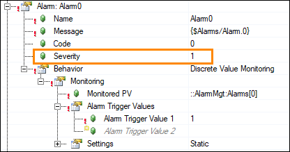

mapp AlarmX Framework - Required Modifications
The Framework by default provides a solid foundation, but in order to integrate it fully into your application there are a few modifications that must be made.
The following list of modifications are required to get the Framework in a functional state within the application.
IMPORTANT: The steps on this page must be executed in order to get the Framework into a functional state!
|
- Define the condition to trigger each alarm
- The AlarmMgt task contains a Boolean array called “Alarms”. Each index of the array corresponds to the Monitored PV for each of the 100 predefined alarms in the AlarmX configuration.
- For each of these 100 alarms, set the Alarms[] bit equal to the alarm condition that is relevant to the application. This is done in the AlarmHandling.st action file.
- For example, if Alarms[0] should trigger when Estop1 is pressed, then:
Alarms[0] := EStop1;
- Define the unique alarm text for each alarm in the Alarms.tmx file
- Text ID Alarm.0 holds the alarm text for Alarm0, Text ID Alarm.1 holds the alarm text for Alarm1, etc
- Remember to define the text for all languages that are relevant to the application
- Assign an appropriate severity to each alarm in the Alarm List according to the alarm mapping
- This is done in the AlarmX.mpalarmxcore configuration file
- By default, the severity of all alarms is “1”, which corresponds to the “Info” reaction
- The severity you select will affect what alarm reaction is triggered when the alarm is triggered

- Define how the application should respond to each alarm reaction
- This is done via the MpAlarmXCheckReaction() function calls in AlarmMgt.st (starting on line 57)
- Within each condition of the IF statement, program how the machine should respond to the reaction
- For example, if the "Error" reaction is true, then stop all axes; if the "Warning" reaction is true, stop the machine after the next cycle; if the "Info" reaction is true, show a pop-up on the HMI with the information.
- For more details on optional changes regarding alarm reactions / alarm mapping, see here.
- If you imported the mapp View front end with the Framework, assign the provided mapp View content (content ID = AlarmX_content) to an area on a page within your visualization.